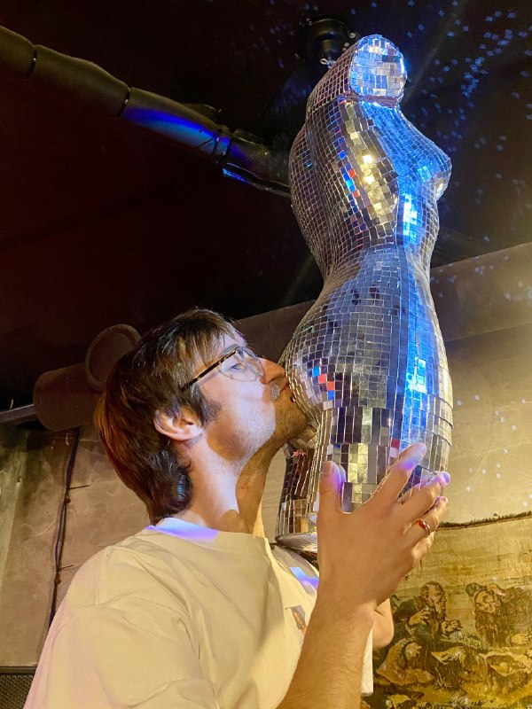
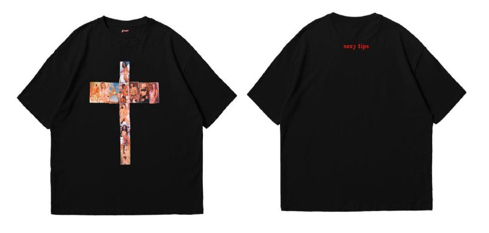

НЕ ДЛЯ
СКРОМНЫХ
sexy tips придумали вдвоём — маша и валера. дальше дописали ночи, рейвы и люди, которые узнают своих с одного взгляда. ниже — как личная одержимость стала субкультурой.
листай ↓ всё на одной нитите самые типсы
Бросил курить — остался на самокрутке. Сигарета, но не сигарета: ритуал для вечеров, когда хочется громче. Бумага, табак, фильтр. А иногда — типс.
Однажды попались те самые — sexy tips. Женщины с принта на картоне. Скрутил — красиво скурил. Взял две пачки и жёг по тем поводам, что помнишь годами.

«все разошлись — она осталась. дверь закрылась, и понеслось. грубо, по-животному — а по ощущениям мягко. очень.»
дарил своим
Завёл правило: один такой типс — самому яркому в комнате. Не за красоту. За то, что ты свой, что у нас один пульс. Просил скрутить в лучший момент — и вспомнить, от кого.
Почти никто не курил. Прятали в паспорт, в кошелёк, под чехол. А когда оказалось, что больше их нигде не достать, каждый стал реликвией.
«коллекционировать тела — или одного, и навсегда. мы с машей выбрали второе. с одним заходишь куда глубже.»
ТЫ СВОЙ.
У НАС ОДИН ПУЛЬС
ушёл в никуда
Годами продавал и был в топе. Деньги, цифры, отказы от повышения — потому что сцена была не моя. Работал вполсилы, и этого хватало. Как роман без любви: всё на месте, а внутри тихо.
И я выдохнул и ушёл. В никуда. Сначала накрыло — оказалось, бездельничать тоже надо уметь. А как научился слышать себя, понял: сейчас или никогда.
«гости поздравили и разошлись — не все. в ту минуту тишины, когда нас осталось трое, всё было понятно без слов.»
маша
Мутабор, хэллоуин, 10:34 утра. Влюбился сразу и насовсем. Первое свидание растянулось на восемь баров за ночь. Под куранты впервые в жизни позвал девушку быть моей.
Маша — художница, самый живой человек, кого я знаю. Сидели дома, фантазировали про мерч — и щёлкнуло: sexy tips, но на футболке.

первая — в европу
Друг возил текстиль — собрали первую партию. Сняли первый сет: мы вдвоём, почти без всего, в своей квартире. То, что выложили, — самая мягкая версия того, что было.
Таймер на дроп, обзвон всех. Первую футболку купил друг — в подарок девушке в Германию. Так sexy tips сразу уехал в Европу. Заказы носили через полгорода пешком, зимой.

для своих
Канал жил даже на паузе. На улице ловили комплименты и один вопрос: где взять? Футболки расходились по городам — Москва, Питер. Принт Маши засветился на одном из самых жёстких сетов в Мутаборе.
Бренд стал тихим клубом для своих. Но такое не держат в тени.
«подростками скинулись, чтобы впервые увидеть настоящую женскую грудь. неделями не ели в столовой, копили. оплатили мгновение — и повзрослели.»
МЫ НЕ БРЕНД.
МЫ СУБКУЛЬТУРА
узнавать своих
Я всегда жил внутри какой-то сцены — там, где человека видно по одежде, где свой находит своего. Потом собрал собственный код: ярко, дерзко, без скромности. Не лейблы — образ, собранный из себя.
sexy tips — чтобы таких собрать в одном месте. Тех, кто не боится взглядов, осуждения и своих желаний. Я не учу жизни. Хочу, чтобы в принте люди узнавали друг друга.